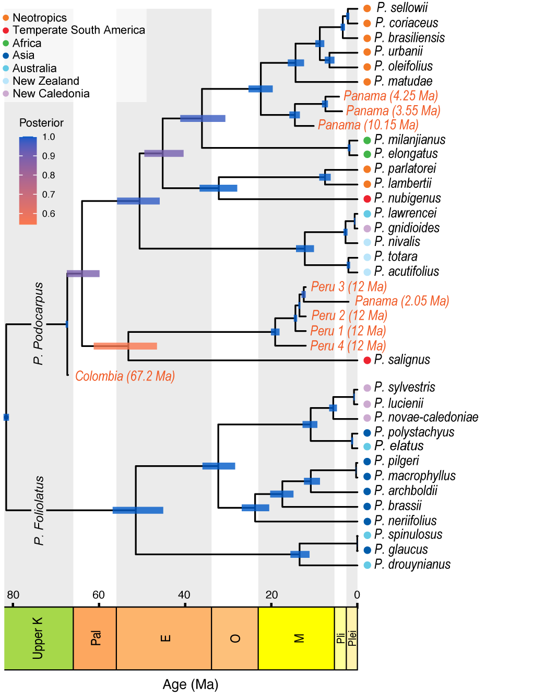

Evolution and adaptation across deep time
Why do lineages evolve the traits they do? I use phylogenetics, evolutionary simulation, and trait analysis in plant groups like conifers to trace how form responds to environment, from pollen walls that thicken under higher UV to shield DNA, to the puzzling, repeated evolution of fleshy cones. The goal is to connect a trait to its drivers, from environmental pressures to selection to changes in the genome.